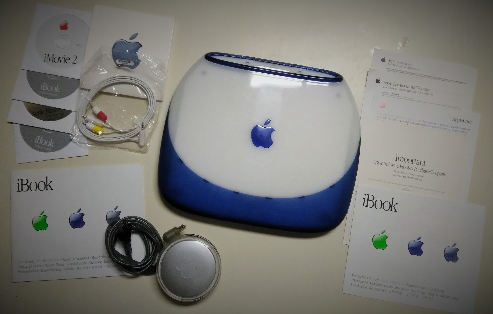
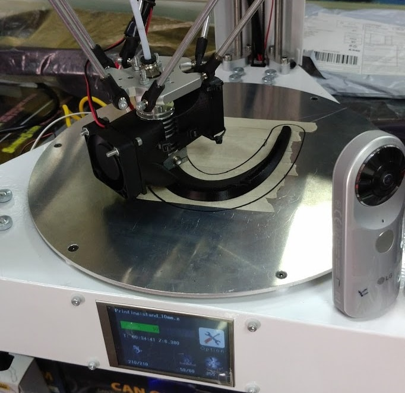

Last modified: Wed Mar 07 2018 05:06:17 GMT+0800 (Malay Peninsula Standard Time)
DIY and Technology
Building My Interest
I have a strong interest in DIY and technology since I was young. I grew up very differently compared to other kids. While people around were still playing LEGO or Barbie, I started to play with tools (soldering iron, glue gun, multimeter, etc) and power tools (saw, drills, etc) to build the things I like in my parents' workshop. Although I cut myself regularly (from what I remembered), I still do it. My parents do not stopped me from doing that. What they tell me all the time is "be careful".
My mom sent me to a computer class when I was 5 (if I was not mistaken). I remembered I was playing with Windows 95 and MS Paint at that time. Don't blame your parents if they don't send you to computer class when you were 5 as not much people will have strong passion about learning.
As a kid growing up with technologies, people often asked me where did I learnt all about the technologies while I was in college. I remembered my friends freak out when I told them that I started to play with Virtual Machines (VMWare) when I was around 14-15 years old. Today, I am always the "Tech Support" among my close friends.
Computer & Server Building
I built my first computer when I was 12. My mom friend's daughter which is 5 or 6 years older than me showed me how to do it. Since then, I found out that building your own computer is not as hard as you thought, especially when the manufacturers try to make it to be more user friendly for system builders.
It was a lot harder to build a computer at that time compared to right now for sure. You can easily get more information from the internet with just a few clicks away. I do not want to mention too much of it as a lot of people already knew about it. I included a link about my recent computer build on PCPartPicker.com. The website contains detail about what
I started building my own workstation with server grade parts on my winter break on December 2014. I found out that building a server that had higher performance was much more affordable than owning a regular desktop computer that running the best consumer processor. I bought a used workstation from eBay and learnt my way up from ground zero. A lot of research and reading had to be done even if I had a lot of experience with consumer grade computer.
I Love Fixing Stuff
I love to fix stuff. I am probably know as the handy man no matter where I go. If you would want a suggestion for how to get started, I would suggest you do not to be afraid of breaking stuff. Be careful and cautious about it. Also, it will not hurt to have more than a one of the same thing, especially when it comes to multimeter (analog and digital).
Loud Clicking Mouse
I bought a wireless keyboard and mouse combo to replace my wired mouse and keyboard. The only reason why I picked this combo set was due to it was super comfortable to type as laptop has the exact same key style of keyboard.
After using for just a few minutes, I complained to my friend that the clicking mouse on my mouse is too loud. Then, I took apart and dissemble the entire mouse and remove the push button switches. Then I modified the switches and assembled everything back. It worked like a charm! I did not have any pictures of that as I did that during the time when I was super busy.
Ceiling Fan Controller
This is probably one of the most common thing that is broken in a household: ceiling fan controller. If you have a ceiling fan in the house and it has trouble changing the speed.
Instead of changing the entire fan controller, it can be fixed easily by replacing some components. Hint: The component is related to state machines.
Collectible Computer
There are two collectible computers that I wanted to own since the day I knew about it (probably early 2014?): Apple PowerMac G4 Cube and iBook Clamshell. Both of them are close to 20 years old (as of 2018) I am never an Apple fans but I appreciate how premium the product was at that time. Part of the interest was related to my curriculum in the college. Many of my college classes were related to hardware courses and that was how I built my interest with antique computers.
Apple PowerMac G4 Cube
This was the condition when I first bought it in March 2017.
The condition of the item was used, but like new. PowerMac G4 Cube is considered as a collectible due to the limited production. Also, most of the acrylic were cracked. This makes the item to be even more rare to be found in the market. I found the replacement speaker parts too, but I did not have time to fix it yet. The speakers are the only part that I have not reconditioned yet.
Other than that, I upgraded the processor from single fore 450Mhz to dual core 500Mhz. Of course, it requires you to modify the hardware and do a lot of research to accomplish this. Yes, it is possible! And here is a picture of the single core versus dual core processor after modification on the coil.
I also designed and 3D print a stand so that the entire weight of the inner cube is supported by the stand. People that who owned i will understand why this is needed.
Apple iBook Clamshell
On May 2017, I bought two iBook Clamshells. One of the condition was in like new and the other one was in poor condition.

I got lucky with the like new condition as it came with all the documentation and accessories. The only thing that was missing in the collection was the original box. The item was fully functional. It came with Mac OS 9.1.
I upgraded the company to Mac OS 10.3 and installed an 128GB SSD on the machine.
Disassembling the computer just to access the hard drive was probably one of the hardest things I had ever done. More than 100 screws with different kind and sizes were required to be removed.
Here is another iBook that I own.
3D Printing
Since 3D printers were affordable, I had a plan to pick one up after seeing my long distance uncle owns one in the USA. There was no reason for my to pick up a 3D printer as it was not related to my study at all. My friend will always think that it was just a waste of my money. In my own opinion, I used that as a tool for me to learn.
I uploaded some of my 3D print video to my Youtube channel. You can view the playlist here.
First 3D Printer
I picked one up during Black Friday on 2016 for $147. The one that I got was a budget one but it was the 3D printer with the largest community. When I get started with some electronics that I was not familiar with, I usually pick a cheap item. The main reason is there is room for me to upgrade the parts by myself. This was how my 3D printer look like at first when I first bought it.
It was simple. I received my 3D printer on early December 2016. However, I did not really use it as I was not familiar with it. It was sitting in my basement for another 3 months before I decided to upgrade it and started using it. After some upgrade, this was how my printer looks like.
Other than the cosmetic and functionality upgrade, I upgraded the power supply, micro-controller, and LCD display. Since the micro-controller was not meant to made for the printer I used, I had to do all the wiring and work on the firmware. I was the first person who ported the firmware for the controller to this printer. I published my work and contacted the manufacturer of the micro-controller and told them about it. They were very happy!
Eventually, I sold away the printer after owning it for less than 6 months.
Second 3D Printer
I bought a second 3D Printer on May 2016. This time, it was ~3x more expensive than my previous printer. With the previous experience I had, owning a more expensive 3D printer is no longer a problem. Since the printer was Made in China, I paid extra precaution with it. I rebuilt the 3D printer from ground up even it was 80% prebuilt. I wrote about how this printer is a fire hazard. At last, this printer was pulled down from the shelf by the manufacturer. I believed there is a new version of this printer now.
Here is a picture of my 3D printer in action. You can also view the video of some of my print here.

I did two months of research and development on this printer by myself. I discovered some ways to print any type of material without using heated bed (although my printer come with heated bed).
Drone
I did not have too much time to play with drone, but I own one personally and few a few of others. Will fill in this section when I found the pictures.